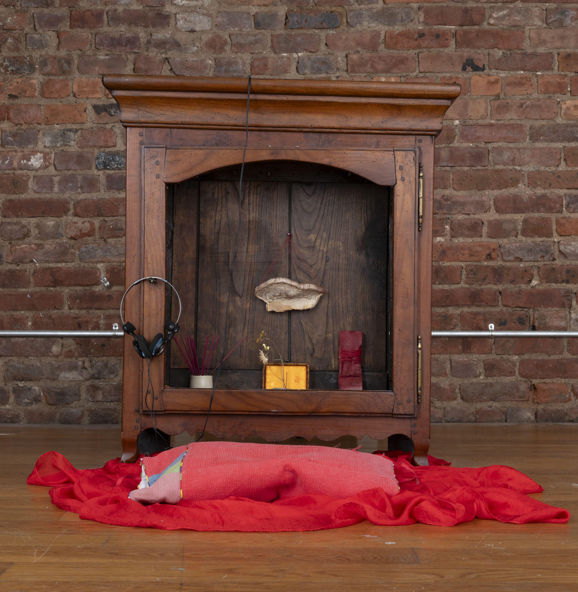
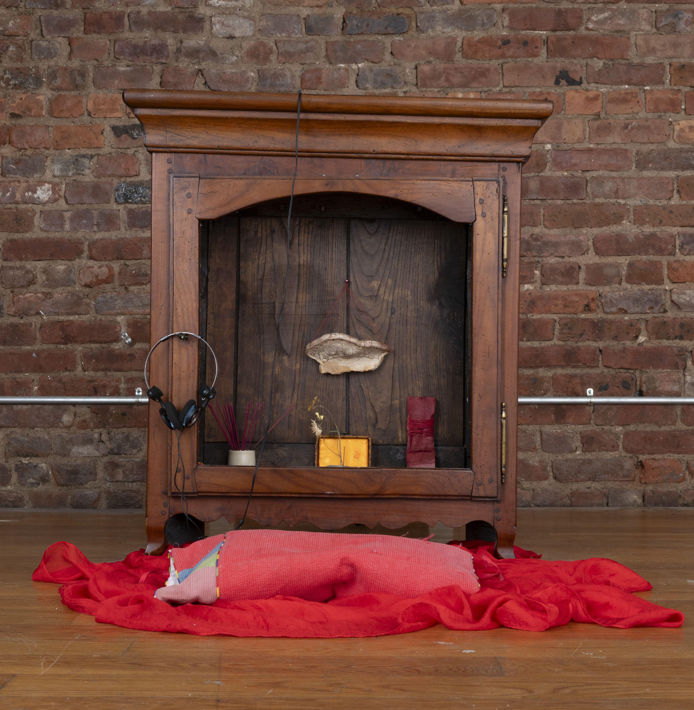
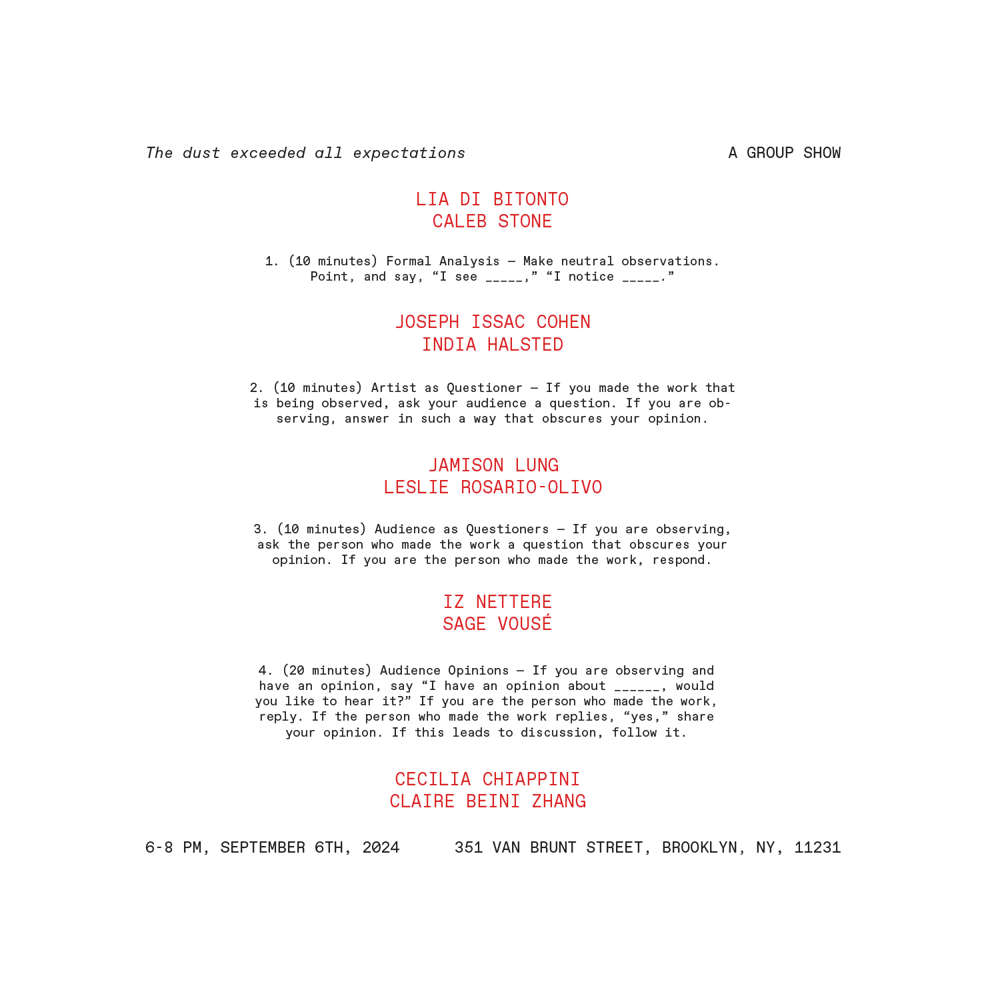
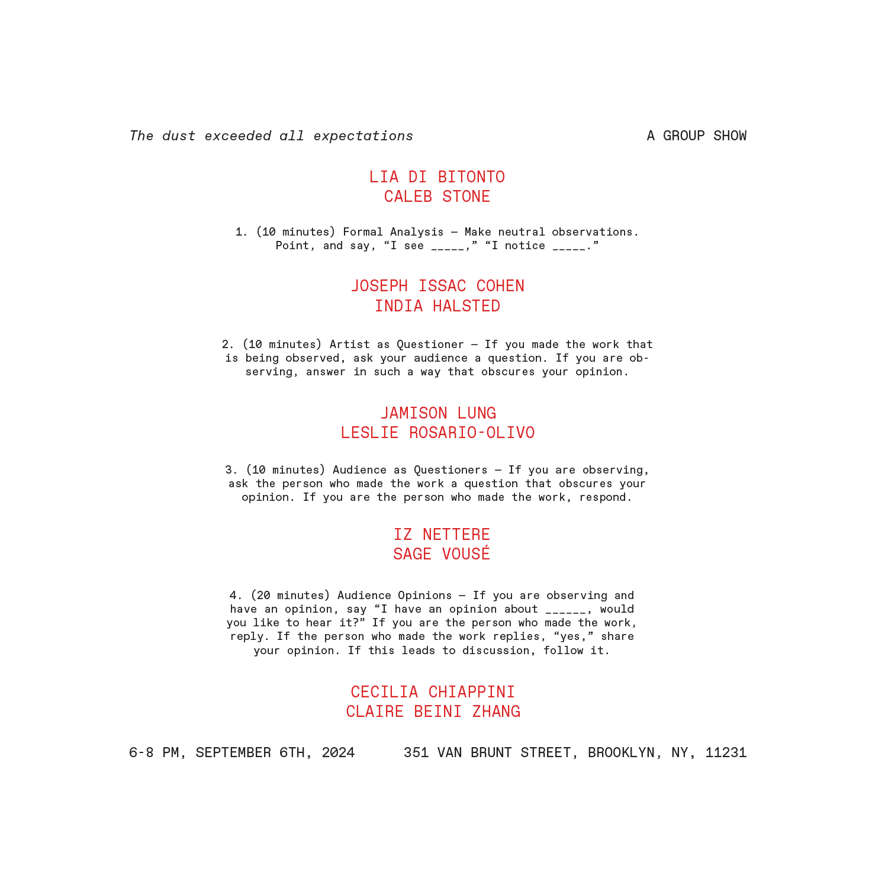

Two doors stand together. One door is open. One door is shut. Our mother is just beyond the open door. Cradling
our nephew, freshly borne into this world. We stand directly across the hall.
We watch from across the gap.
She is singing and her song opens a gate inside us. A gate across time and space. We see her. Younger. Holding
another baby. We know that baby is us. We feel her arms around us. We know what it means to be small.
Now, we see our grandmother. Holding us. She came to live with us after our grandfather, our mother’s father,
passed away days before our mother gave birth to us. Our grandmother sang us that song too. Cradling us in the
first year of our life and we have been thinking of how grief becomes a legacy.
Now, we see our grandmother in a different room. Holding our mother. Singing that same song. She is a baby, and so
easy to hold.
The gate remains open. You and I are looking through it.
Made with special thanks to Scott Li.
The dust exceeded all expectations
September 6 - 20, 2024
351 Van Brunt St.
Red Hook, Brooklyn, NY
Lia Di Bitonto, Cecilia Chiappini, Joseph Issac Cohen, India Halsted, Jamison Lung, Iz Nettere, Leslie
Rosario-Olivo, Caleb Stone, Sage Vousé, and Claire Beini Zhang.
Documentation by Nathalie Scheuller.
Design by Claire Beini Zhang.
This website was made and designed by Claire Beini Zhang with special thanks to Mianwei Wang.
 



 
